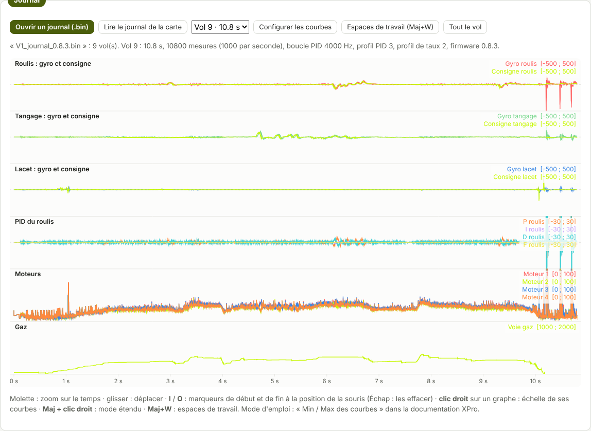

TRUEGLIDE
TRUEGLIDE Visualiseur Blackbox
L'onglet Visualiseur Blackbox (groupe Analyse) trace les courbes d'un journal de vol XPro : gyroscope, consignes, PID, moteurs, vitesse des moteurs, voies radio, batterie. Tout se fait dans le logiciel, sans autre programme.


Ouvrir un journal
- Ouvrir un journal (.bin) : un fichier téléchargé dans l'onglet Blackbox.
- Lire le journal de la carte : lit le journal par USB et l'ouvre directement (même chose que le bouton « Voir dans le visualiseur » de l'onglet Blackbox).
- Un journal peut contenir plusieurs vols (un par armement) : la liste à côté donne Vol n° · durée ; le dernier vol est ouvert d'abord.
Lire les courbes
Chaque graphe a son titre et ses courbes, avec leur couleur et leur unité. Au passage de la souris, une ligne verticale marque l'instant, et la légende de chaque graphe donne la valeur de chaque courbe à cet instant (« -- » si la mesure manque) et son échelle [min ; max]. Tout le vol remet le zoom sur le vol entier. Pour régler l'échelle d'une courbe (Min / Max), voir Visualiseur Blackbox : Min / Max des courbes ; Configurer les courbes ouvre le même dialogue pour tous les graphes.
Espaces de travail
Un espace de travail est un ensemble de graphes avec leurs échelles, gardé par le navigateur. Deux espaces sont préréglés :
- Réglage du PID : gyro et consigne sur chaque axe, P, I, D et F du roulis, sorties des moteurs, gaz.
- Moteurs et batterie : gyroscope brut et filtré, vitesse des moteurs, sorties des moteurs, tension et courant.
Le bouton Espaces de travail (ou Maj+W) choisit l'espace 1, l'espace 2 ou « Mon espace », et Enregistrer l'espace actuel comme « Mon espace » garde vos graphes et vos échelles pour les prochains journaux.
Souris et clavier
| Geste | Effet |
|---|---|
| Molette | zoom sur le temps |
| Glisser | déplacer la fenêtre de temps |
| I / O | marqueur de début / de fin à la position de la souris (Échap : les effacer) |
| Clic droit sur un graphe | échelle de ses courbes |
| Maj + clic droit | mode étendu |
| Maj+W | espaces de travail |